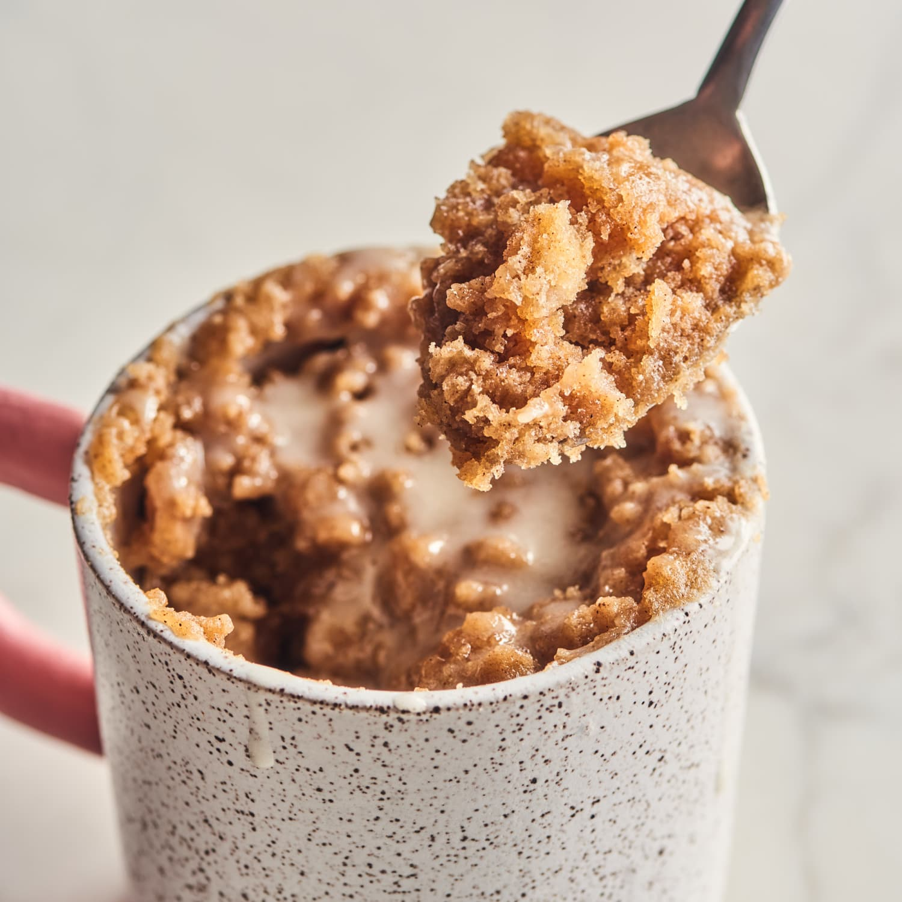

Peanut Butter Cake in a Mug

Description
Disclaimer: none of the pictures used on my web pages are mine.
Really simple little mug cake you can make in the microwave, adapted from a recipe I found online a long time ago.
All the ingredients needed will likely be found in your baking cupboard, and you can add extras to embellish as you please!
Ingredients
- 2tbsp plain flour
- 1tbsp maple syrup
- 2tbsp plant milk
- 1/4tsp baking powder
- 2tbsp smooth peanut butter
- 1tsp vanilla extract (optional)
Method
- Take a medium-sized, microwave-safe mug and tap in the flour and baking powder. Mix together well.
- Add the maple syrup and plant milk and stir together well until there are no clumps.
- Add the vanilla extract at this point, then add the peanut butter and stir together really well. The ideal consistency is a stodgy one. If it is too watery, add some more peanut butter or flour until it reaches your desired consistency.
- Microwave on high for 60 seconds or thereabouts.
- Check it is cooked enough (should be a cakey consistency, hence the name). Then dig in and eeeeeeeenjoy!